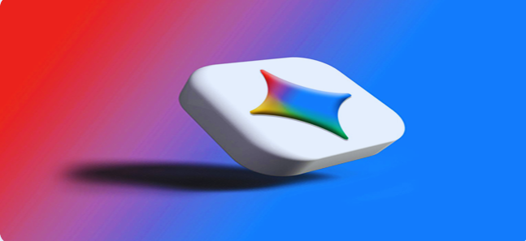
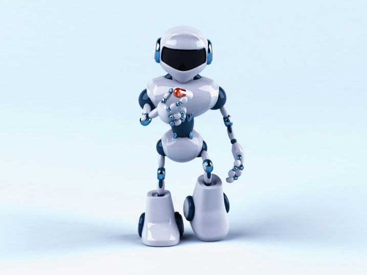
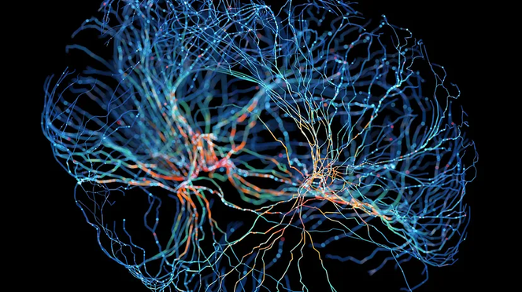
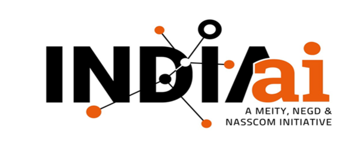
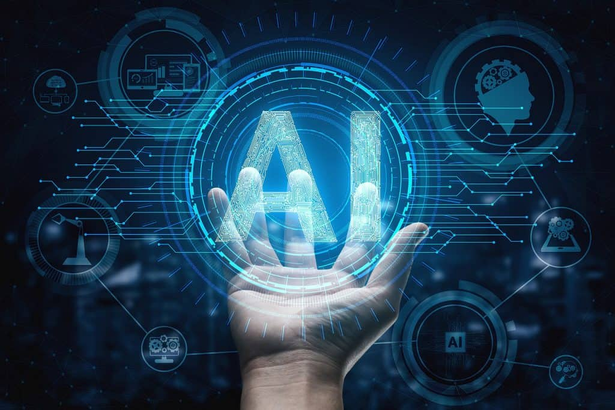
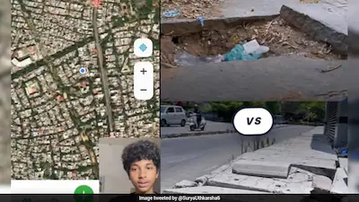
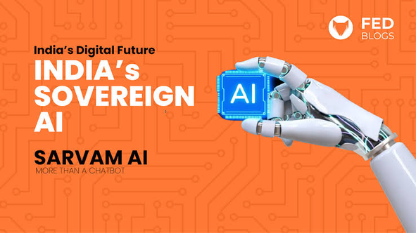

Newsletter of AURA · Saintgits College of Engineering
AURA INSIGHTS
Artificial Intelligence for Understanding, Research and Application
The inaugural issue brings together institutional messages, developments from the AI world, India's growing AI ecosystem, and a spotlight on connectomics.
READ · REFLECT · STAY CURIOUS
FROM THE LEADERSHIP
Messages that set the tone.
A Word From Our Principal
I am delighted to see the launch of AURA Insights, the official newsletter of AURA (Artificial Intelligence for Understanding, Research and Application), the AI club of the institution. This initiative reflects the enthusiasm, creativity, and intellectual curiosity of our students and faculty. In an era where Artificial Intelligence is transforming every sphere of society, staying informed and fostering innovation are essential.
— Principal
A Word From Our Head of Department
It gives me immense pleasure to see our AI Club take shape and launch its very first newsletter today. Artificial Intelligence is no longer a distant, futuristic concept; it is already reshaping how we learn, work, and solve problems across every field. This club offers a valuable platform to explore, experiment, and gain real expertise beyond the classroom.
— Dr. Nisha Joseph
A welcome from the Coordinator
Welcome to the inaugural edition of AURA Insights - the voice, vision, and vibe of our AI Club.
AURA stands for more than just a name. It reflects the energy we bring to the world of Artificial Intelligence - an aura of curiosity, innovation, and responsibility.
In an era where AI is redefining how we think, create, and live, this newsletter is our attempt to pause, explore, and share. Through AURA Insights, we aim to decode complex ideas, spotlight student innovations, and spark conversations that go beyond code.
This is just the beginning. This newsletter is made by the students, for the students.
Thank you to the entire team who made this possible. Read, reflect, and stay curious.
— Ms. Talit Sara George · Faculty Coordinator
AI AROUND THE WORLD
What is shaping the AI landscape?

Google Unveils Gemini 3.6 Flash
New model delivers improved performance while reducing costs for enterprise AI. The issue describes applications in coding, multimodal reasoning and high-volume AI tasks.

NVIDIA Advances Physical AI for Healthcare Robotics
The newsletter describes a Medical Physics Simulation framework for training healthcare robots in realistic virtual environments, combining physics-based simulation with generative AI.
Microsoft's MAI Models Aim for Smarter, More Efficient AI
The issue highlights Microsoft's specialized MAI models and the wider trend toward task-specific AI in enterprise applications.

Mapping the Brain's Billions of Roads
Connectomics maps the brain's neural connections. The issue explores how AI and supercomputers can accelerate this work and contribute to understanding neurological conditions.
AI IN INDIA
India's AI ecosystem, in motion.

IndiaAI Mission Opens Global Doors for Indian AI Startups
The issue reports on the Global Acceleration Programme and international support for Indian AI startups.

BuildAI TechPitchSprint to Empower India's AI Startups
A national initiative combining a technical hackathon with a startup pitch competition.

Teen Innovator Develops AI-Powered App to Improve Bengaluru's Footpaths
The newsletter features RASTHE, a citizen-focused app for reporting and rating footpath conditions.

Sarvam AI Brings Artificial Intelligence to Every Indian Language
The issue highlights multilingual and voice-based AI designed around India's linguistic diversity.
ABOUT AURA
Made by students, for students.
AURA — Artificial Intelligence for Understanding, Research and Application — is the AI club of Saintgits College of Engineering.
Faculty Coordinator: Ms. Talit Sara George
Publication: Released on the last Friday of every month.